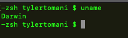

System Information Commands
- date
- uptime
- users
- who
- uname
- df
- du
date
uptime
tells us how long user has been online
users
reports all current logged in users
who
reports each instance of current users logged in
- the console is gui normal desktop enviroment display
- the ttys000 is the terminal window
uname
returns the version of unix being used
uname -a
more Information, -a option show hidden info and folders
uname -p
-p is the processor name
df "disc free"
shows us free space available on the disc
du "disc usuage"
shows how much space a file or directory take up
it's like get info
du filePath
if it's a directory it will show the size of each file or directory inside of it
du -d 3 filename
-d is for "depth" and limits how many folder/directories deep it will return
for example
du -d 1 my_project
will only go one directory deep while,
du -d 3 my_project will go three deep
du -d 0 my_project
will only tell us the size of that directory which is VERY USEFUL